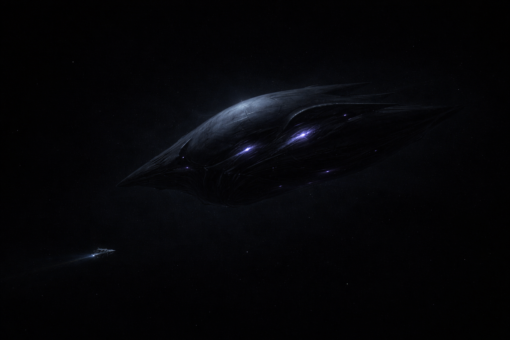
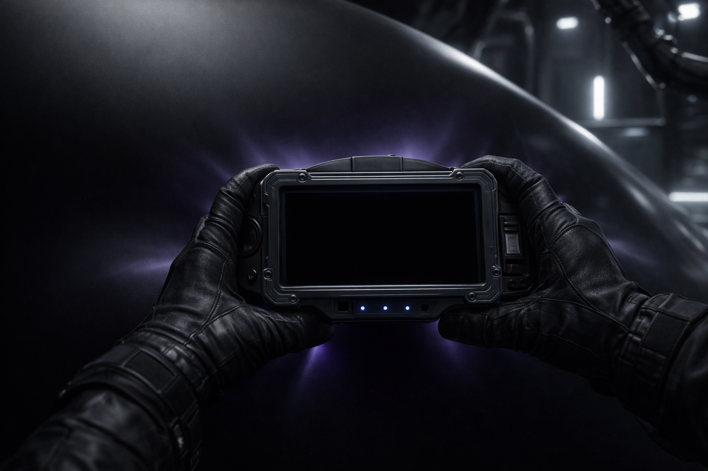
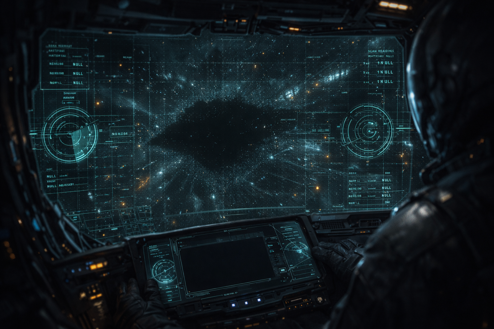
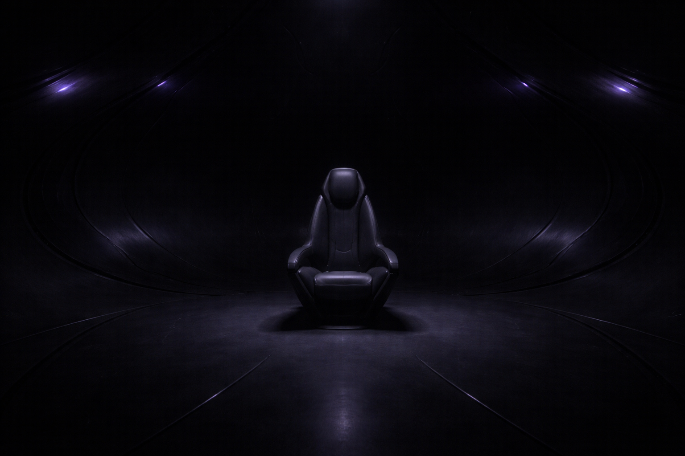

THE FOURTH
Designation provisional. Classification pending. File status: open.
The name is a filing error.
When the Compact first catalogued the pre-Collapse civilizations, they identified four. Foundry, Lattice, Choir, and an unnamed fourth whose evidence consisted of a single ship. The numbering was administrative. Later, when Weave anchor points were discovered in deep corridors, the count became five. Nobody updated the designation. The Fourth is still called the Fourth.
Compact archivists have submitted three requests to rename the entry. All three were returned with the same note: "Rename to what?"
File opened: 7 years post-Collapse. Last updated: 7 years post-Collapse.
One ship.
An Outermark survey team found it in deep Rift corridor 4-Null, drifting at 2.3 meters per second on no detectable heading. No energy signature. No transponder. No debris field suggesting it had come from somewhere else. It was simply there.
The cockpit was open. No crew. No remains. No personal effects. The survey team's pilot, Wren Hadak, described the interior as "a room that doesn't want you in it." She did not elaborate. Her co-pilot's report is shorter: "Confirmed. Empty."
The ship was towed to Compact custody without incident. It has not produced any additional evidence of its origin in the decades since.

The readings came back empty.
Spectroscopic analysis: no result. Not unknown compounds. No result. The instrument worked fine on control samples before and after. Aimed at the hull, it returned values indistinguishable from pointing it at empty space.
The hull has no seams. No welds. No fasteners. No panel lines. No access points. The cockpit opening is the only discontinuity in the entire surface. Compact metallurgists requested permission to take a sample. The request was approved. The sampling tool could not mark the surface. A harder tool was requested. Also could not mark the surface. The file lists eleven tools attempted. None left a mark.
The twelfth request was for a focused plasma cutter. It was denied without explanation.

I've been doing materials analysis for twenty years. I've scanned Foundry alloys, Lattice mineral bonds, Choir bio-membrane. Everything returns something. This returns nothing. Not zero. Not error. Nothing. As if the beam went somewhere else.
Hardness: unmeasurable. Density: unmeasurable. Composition: unmeasurable. Status: classified.
It doesn't hide. It leaves.
The Specter has one system the Compact has been able to activate. The cloaking device was triggered accidentally during a routine inspection when a technician touched a section of the interior wall. The ship vanished. Sensors, visual, gravimetric — all confirmed the ship was no longer present in the inspection bay.
It returned four seconds later. Same position. Same orientation. Same open cockpit. The technician was still inside. She reported no sensation of movement, no change in lighting, no sound. From her perspective, nothing happened. From the inspection bay's perspective, the ship and the technician ceased to exist for four seconds.
The bay's atmospheric sensors recorded a brief pressure drop consistent with the sudden absence of a ship-sized volume of air. The air rushed back in when the ship returned. That pressure wave is the only physical evidence that anything occurred.

Where does it go?
There are no controls.
The cockpit contains a seat. The seat is sized for a human pilot. This is the single most discussed detail in the entire Fourth file, and no one has produced a satisfactory explanation.
No screens. No instruments. No input devices. The walls are the same seamless material as the exterior. Faint violet ambient light from no identifiable source. Spectrographic analysis of the light returns a wavelength that doesn't match any known emission process.
Pilots who have sat in the seat report a persistent low-frequency hum. Recording equipment in the cockpit does not detect the hum. Pilots describe it as "coming from inside my head, but not mine." Three of the seven test pilots requested to sit in the seat again. Two of those three requested a third session. The program was suspended before a fourth could be scheduled.

Test pilot 3 submitted seven requests to resume the seating program. All denied. Test pilot 3 currently serves as a Specter pilot in active combat operations.
One template. No explanation.
The original Object 4-Null was never replicated. What modern pilots fly is something else — ships built by Compact engineers who studied the Specter for decades and produced an approximation. The hull is conventional alloy shaped to match the exterior geometry. The cloaking system is a reverse-engineered copy that achieves a similar effect through entirely different means. The EMP discharge was the easiest system to replicate. The Compact does not discuss what was hardest.
Specter pilots report a persistent low hum in the cockpit that doesn't match any known system. Pilots say they've grown to like it.
The original Object 4-Null is stored at a Compact facility whose location is classified. Fourteen people have clearance to access it. The access log shows zero visits in the last six years.
What the file doesn't contain.
The Fourth file has no section on civilization. No culture, no language, no social structure, no territorial holdings. There is one ship. The file is about the ship.
It has no section on biology. Whatever built the Specter left no remains, no DNA, no organic trace. The seat is human-sized but that constrains nothing — a chair is not a skeleton.
It has no section on motive. Why was the ship in corridor 4-Null? Was it abandoned, lost, or placed? If placed, for whom? If abandoned, what would cause the builders of an indestructible ship to leave it behind?
The file contains 214 pages. Eleven are materials analysis. Eight are the cloaking event reports. Six are the pilot seating transcripts. The remaining 189 pages are redacted.